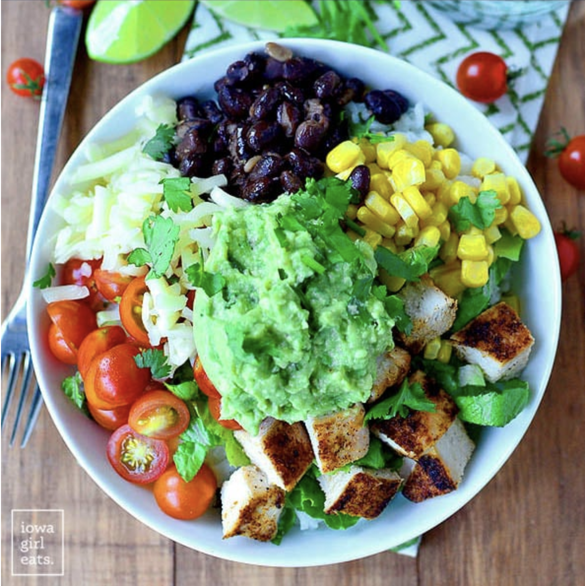

Burrito Bowl

Description
The burrito bowl is a personal favorite of mine because of its simplicity, nutrition, and my
love for mexican cuisine. My love for burrito bowls was sparked by a popular meixcan restaurant
on UH Mānoa campus called "Brito bowls". In this recipe I will show you how to make a burrito bowl
just as good, if not better than the ones found on campus.
Ingredients
- Seasoning mix
- 1/2 teaspoon Cumin
- 1 tablespoon Chili powder
- 2 teaspoons Garlic powder
- 1/2 teaspoon Onion powder
- 1 and 1/4 teaspoons Salt
- 1/4 teaspoon Cayenne pepper
- 1/4 teaspoon Oregano
- 1 lb chicken breast
- 1 can of black beans
- 1/2 cup water
- 1 and 1/2 cups cups cherry tomatoes, halved
- 1 and 1/2 cups sweet corn kernels
- 4 oz freshly shredded Monterey Jack cheese
- 1 small head romaine lettuce, chopped
- Cilantro-lime rice
- 2 cups water
- 1 tablespoon canola or vegetable oil
- 1/2 teaspoon salt
- 1 cup long grain white rice
- 1/4 cup chopped cilantro
- 1/2 lime
- Guacamole
- 3 avocados
- 1/2 lime
- 2 tablespoons chopped cilantro
- Garlic salt to taste
Steps
- Combine seasonings, scoop out 1 tablespoon then set to the side for the black beans
- Oil chicken breasts, add seasoning to both sides, grill each side for 3-4 minutes on medium high heat, chop
- For the cilantro-lime rice: Bring water, oil, and salt to a boil in a small saucepan. Rinse rice in a strainer
under cold water then add to the boiling water, place a lid on top, turn heat down to low, and simmer until rice
is tender, about 12-15 minutes. Add lime juice and cilantro then stir to combine and set aside.
- Add black beans to a small saucepan with water and reserved 1 Tablespoon seasoning mix. Bring to a
simmer then turn heat to low to stay warm.
- Add all guacamole ingredients to a bowl then mash with the back of a fork. Taste and adjust garlic salt if necessary.
- Assembly: Scoop cooked Cilantro-Lime Rice into bowls then top with grilled chicken, seasoned beans, cherry tomatoes,
sweet corn, shredded cheese, romaine lettuce, and Quick Guacamole. Serve with Tabasco sauce, sour cream, and salsa, if desired.
Home